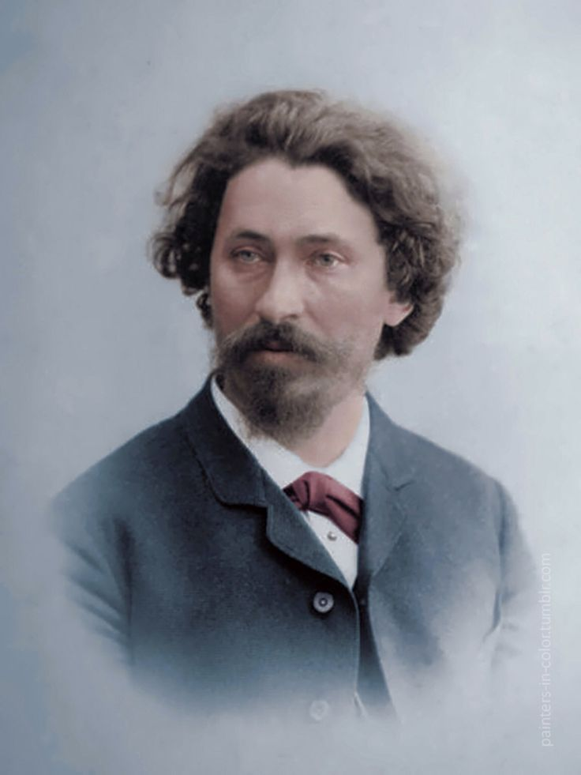

Илья́ Ефи́мович Ре́пин (24 июля [5 августа] 1844, Чугуев, Российская империя — 29 сентября 1930, Куоккала, Финляндия)[1] — русский[2] живописец, педагог, профессор, действительный член Императорской Академии художеств.
Уже с самого начала своего творческого пути, с 1870-х годов, Репин стал одной из ключевых фигур русского реализма. Художнику удалось решить задачу отражения в живописном произведении всего разнообразия окружающей жизни. В своём творчестве он сумел охватить все стороны современности, затронуть темы, волнующие общественность, живо реагировал на злобу дня. Репинскому художественному языку была свойственна пластичность, он воспринимал различные стилистические направления от испанских и голландских художников XVII века до Александра Иванова и современных французских импрессионистов.